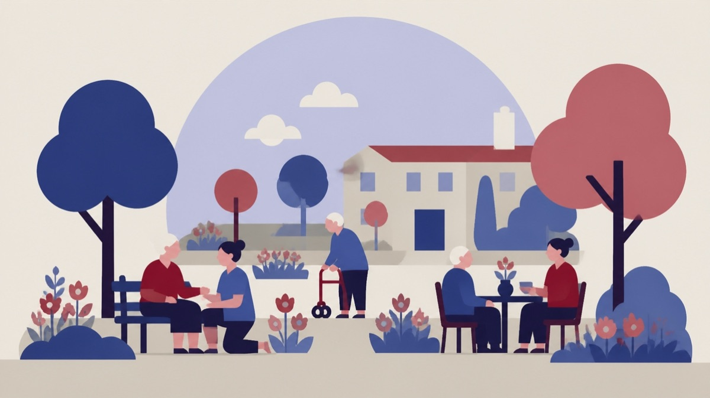

Besluttet 3. november, Sundheds- og Forebyggelsesudvalget, Aabenraa
Orientering om indsats til borgere med følger efter hjernerystelse

Kort fortalt
- Hvem
- Sundheds- og Forebyggelsesudvalget, Aabenraa Kommune
- Hvornår
- Tirsdag 3. november 2026
- Status
- Besluttet. Taget til efterretning.
Er noget forkert her? Skriv til os
Læs hele sagen Kommunens egen tekst
Sagsfremstilling
Udvalget orienteres i denne sag om status på projektet ”Tværfagligt samarbejde og én indgang
for borgere med commotio (Hjernerystelse).”
Chefgruppen i Social & Sundhed igangsatte i juni 2025 projektet ”Tværfagligt samarbejde og
én indgang for borgere med commotio.” Årsagen til igangsættelsen af projektet var, at
ansøgninger om understøttelse eller hjælpemidler til borgere med erhvervet hjernerystelse,
blev søgt og bevilliget tilfældigt fra flere steder i kommunen. Der kom ansøgninger til:
Jobcenter
Center for Socialpsykiatri & Rusmiddel
Hjerneskadekonsulenten
Træning & Forebyggelse
Tale, Høre, Syn.
Formålet med projektet var at danne en struktureret indsats med en sammenhængskraft på
tværs af faggrupper og afdelinger. Det er lykkes, og der er blevet dannet et mere individuelt
tilrettelagt forløb, der er koordineret ved forvaltningens hjerneskadekonsulent.
Projektet bygger desuden på nyere forskning og nationale kliniske retningslinjer, som har
medført et paradigmeskifte i tilgangen til hjernerystelse. Hvor fokus tidligere var på hvile og
begrænsning af aktiviteter, peger den nuværende viden på, at information og rådgivning,
gradueret fysisk træning samt en koordineret tværfaglig indsats kan understøtte bedring og
forebygge langvarige følger efter hjernerystelse.
Målgruppe i projektet
Målgruppen er:
Borgere med nye eller ældre hovedtraumer
Borgere med syns- og hørepåvirkninger, herunder tinnitus, som følge af hovedtraume
Borgere med udtalt træthed og/eller smerter som følge af hovedtraume.
Organisering af indsatsen
Projektet er organiseret med én samlet indgang til kommunen for borgere med commotio. Alle
henvendelser sker til Visitation & Understøttelse, hvor hjerneskadekonsulenten har det
overordnede ansvar for koordinering, screening og visitation til relevante tilbud.
Ved henvendelse gennemføres en individuel screening med henblik på at afdække borgerens
behov og sikre det bedst egnede forløb. Det tværfaglige tilbud kan bestå af følgende indsatser:
1. Individuelle samtaler og screening ved hjerneskadekonsulent
2. Et 12-ugers træningsforløb i Træning & Forebyggelse bestående af målrettet træning,
undervisning
3. Individuelle forløb i Tale, Høre og Syn
4. Evt. opfølgningsforløb inden for voksen-specialundervisning (VSU) i Center for
Hjerneskade & Beskæftigelse.
Ved afslutning af forløbet vurderes behovet for eventuel videre opfølgning. For borgere med
fortsatte udfordringer kan dette blandt andet omfatte deltagelse i et opfølgningsforløb i VSU.
Projektet blev igangsat i oktober 2025, og har nu været i gang i ét år.
Status på projektet
Siden projektets opstart er der startet 38 forløb, hvilket er langt højere end det forventede mål
på 20 forløb. Henvisninger til forløb kommer fra flere forskellige aktører, herunder:
Praktiserende læger
Borgernes egne henvendelser
Jobcenteret
Træning & Forebyggelse
Tale, Høre og Syn
Andre samarbejdspartnere, f.eks. mentorer, støttepersoner og speciallæger.
Der har løbende været fulgt op på udviklingen i aktiviteterne. I projektets opstartsfase var
efterspørgslen på holdforløbene stor, hvilket afspejlede et hidtil uopfyldt behov for et
kommunalt tilbud til borgere med følger efter hjernerystelse. Tilgangen af borgere er siden
blevet mere jævnt fordelt over året.
VSU's opfølgningsforløb blev etableret i sommeren 2026. Forløbene har en varighed på seks
måneder, og der afholdes gruppemøder hver 14. dag. Siden juni 2026 har fem borgere
deltaget i dette tilbud. Det nuværende hold afsluttes ved udgangen af 2026, og der er aktuelt
fire borgere som afventer opstart i 2027.
Der opleves en stigende efterspørgsel inden for tale-, høre- og synsområdet. De individuelle
forløb omfatter ofte vurdering af behov for synshjælpemidler samt vejledning og undervisning i
håndtering af f.eks. følsomhed for lyd og lys samt tinnitus som følge af hjernerystelse. I alt har
18 borgere modtaget voksen specialundervisning i forhold til synsområdet, og 17 borgere til
høreområdet
Finansiering af projektet sker inden for den eksisterende ramme til målgruppen.
Samlet vurdering af status
Erfaringerne fra projektets første år viser, at der er et fortsat behov for en samlet og tværfaglig
indsats til borgere med følger efter hjernerystelse. Den etablerede model med én indgang til
kommunen har bidraget til et mere sammenhængende borgerforløb og bedre koordinering
mellem de involverede fagområder.
Evalueringerne viser, at størstedelen af deltagerne oplever øget fysisk funktionsevne, bedre
håndtering af symptomer og mulighed for at være aktive i længere tid, før symptomer som
træthed, hovedpine og koncentrationsbesvær opstår. Deltagerne oplever desuden mulighed for
at spejle sig i andre med lignende udfordringer, dele erfaringer og støtte hinanden, og flere har
efterfølgende etableret private netværk.
Alle deltagere har indtil videre tilkendegivet, at de vil anbefale forløbet til andre borgere med
vedvarende symptomer efter hjernerystelse.
Sagen afgøres i
Sundheds- og Forebyggelsesudvalget
Indstilling
Social & Sundhed indstiller,
at orienteringen tages til efterretning.
Beslutning
Taget til efterretning.
Kilde: Aabenraa Kommune, Sundheds- og Forebyggelsesudvalget, referat fra mødet tirsdag 3. november 2026, punkt 8. Læs den originale sag hos kommunen.